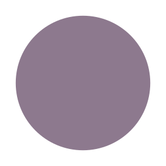
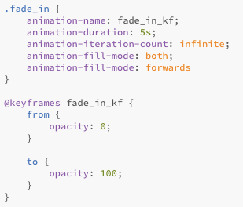

Animationer
Animation 1


Animation 2

Animation 3

Til det første projekt i temaet grundlæggende animation, designede jeg spillet Det Hjemsøgte Hus, som går ud på at fjerne spøgelserne fra heksens hus, inden hun bliver alt for gal.
I løbet af dette forløb lærte vi at benytte JavaScript til vores animationer, samt benytte principper indenfor spiludvikling, hvor vi lærte omkring storytelling og karakter design.
Mit spil design er inspireret af tegneserien Adventure Time, ud fra de klare farver og måden deres øjne er tegnet.
Til udvikling fik vi en case fra organisationen Sex og Samfund, som ønskede et spil til aldersgruppe 13-15 år, for at oplyse omkring deling af billeder på nette. Mere specifikt er det udviklet for at skabe opmærksomhed omkring Privat Snak som er en underorganisation som unge kan henvende sig til anonymt.
I denne opgave var min primære opgave, at have oversigt over alle de forskellige dele vi skulle have med i projektet, samt være Scrum leder, hvilket gjorde at jeg ikke rigtig kom i dybden med de forskellige ting vi lavede, dog var jeg en del ind over designet af spilskærmene, da vi det meste af forløbet manglede et gruppemedlem grundet sygdom.
Den sidste dag i dette projekt, lavede vi en fernisering, hvor en 8-klasse fra en folkeskole kom på besøg, for at teste vores spil.
Vi fik god feedback på selve spillet og handlingen i spillet. Desværre fik vi ike meget feedback på hvor informativ spillet var, og om de ville gå vider til siden Privat Snak.
Der er enkelte elementer i vores spil der desværre ikke virker da vi ikke havde tid til at få rettet fejlene som vi opdagede dem, og der mangler desværre også noget styling på nogle af vores elementer.
Vi opdagede i dette forløb hvor svært det kan være at, arbejde sammen og så lavet et design, der ligner hinandens, hvilket også gjorde at vi designede vores figurer af to omgange da den første udgave ikke passede ind til vores valgte stil.
Under hele dette forløb benyttede vi SCRUM-konceptet, hvilket er en metode til at holde styr på gruppens arbejdsopgaver, ved projektplanlægning og processtyring. Dette fungerer godt til at holde overblik over forløbet, hvor langt man er nået og hvilke opgaver der mangler.
Dette er hoved baggrunden til vores spil. Det er her vores spilfigur går rund for at komme hen til minispillene.
Vores spilbaggrund til det første minispil til Take Action, dette mini spil forgår inden i et omklædningsrum.
Vores spilbaggrund til nr.2 minispil til Take Action. baggrunden er inspireret af et skakspil i dens udsende.